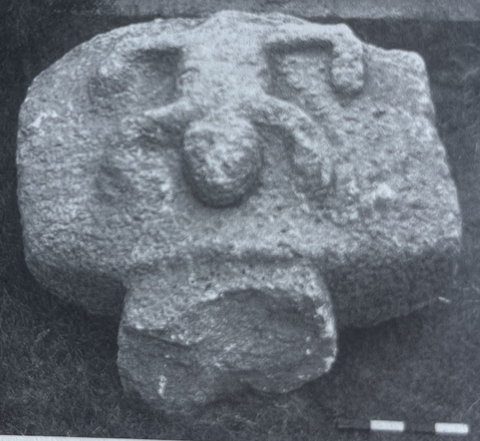
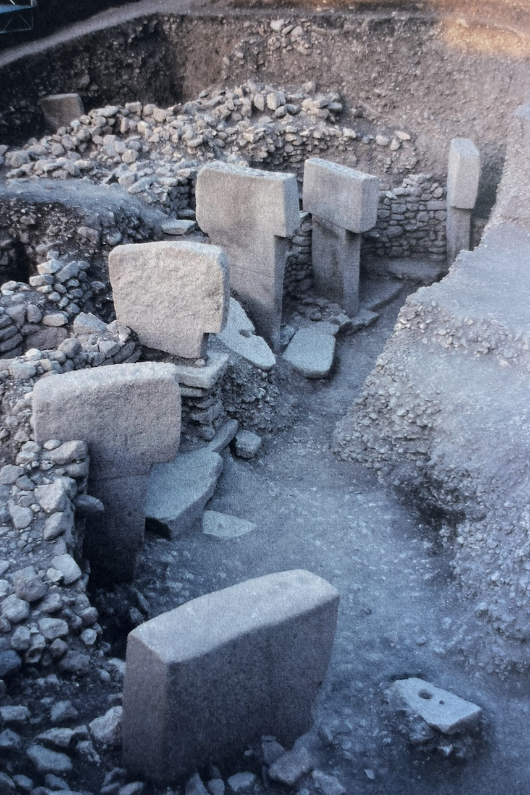
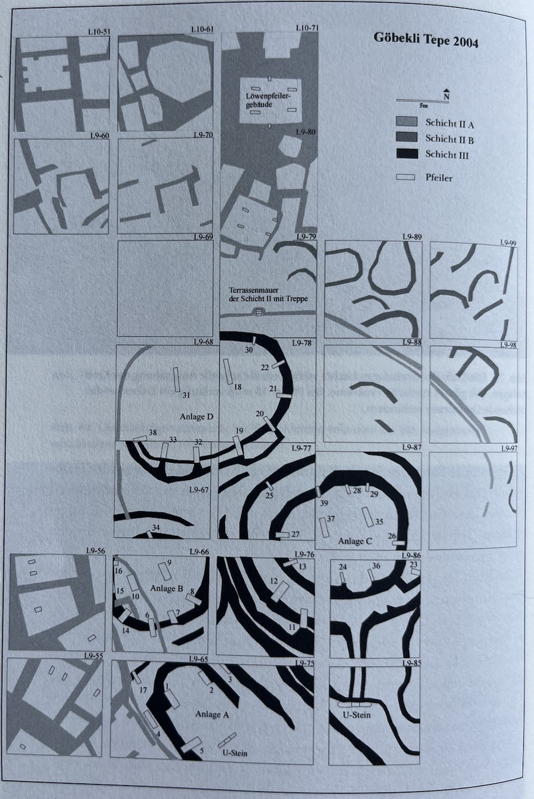
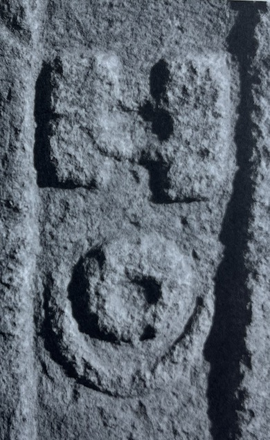

Verslag nummer 100
Toegevoegd op zaterdag 1 augustus 2026
1.438 woorden
Sie bauten die ersten Tempel
Inleiding
Mijn lessen over de verhouding tussen kunst, techniek en samenleving begin ik altijd met een korte zelfgemaakte documentaire over de overgang van een horizontale naar een verticale metafysica, een overgang die volgens mij correspondeert met een verandering van levensstijl in het epipaleolithicum en die op zijn beurt weer het gevolg is van een technologische ontwikkeling (die van de pijl en boog, namelijk).
De archeologische vindplaats Göbekli Tepe bevindt zich chronologisch precies op dit overgangspunt, dus dat is altijd een dankbaar voorbeeld tijdens mijn introductie-college. Hoewel ik hier de nodige artikelen over heb gelezen, vond ik dat het tijd werd om eens een werk van de archeoloog die deze site heeft opgegraven te lezen: de helaas te vroeg overleden Klaus Schmidt. Met enige moeite (vooral wachten eigenlijk) kon ik het boekje in huis krijgen.
Contextualisering
Schmidt begint zijn boek met een algemene contextualisering, waarin hij het archeologische begrippenkader duidt, de belangrijkste vondsten en archeologen introduceert, en de geologische en geografische gesteldheid van het gebied beschrijft. Zo bespreekt hij bijvoorbeeld de gangbare driedeling van de prehistorie in het paleolithicum, mesolithicum en neolithicum, en de verdere verfijning van de eerste fase van die laatste periode in een ouder pre-pottery neolithic A (PPN A) en een jonger pre-pottery neolithic B (PPN B) – een onderscheid dat door dame Kathleen Kenyon is uitgewerkt (p.28).
Na dit begrippenstelstel beschrijft Schmidt relatief uitgebreid vindplaatsen die qua locatie en tijdstip met Göbekli Tepe te vergelijken zijn – grofweg geeft hij hiermee een korte omschrijving van de Natufische cultuur. Zo gaat hij redelijk uitgebreid in op Jericho (de oudste stad van de wereld) en dier zusterstad 'Ain Ghazal, beschrijft hij Çatal Höyük (met de 'gebarende godin' p.54f), en bespreekt hij de verschillende architecturale stijlen die in Çanönü gevonden worden (de grillpan-architectuur, kanaalhuis-architectuur en celplan-architectuur, p.63; zie ook Cauvin 1995, p.120).
Redelijk veel ruimte wordt ingeruimd voor de beschrijving van Nevalı Çori, mogelijk omdat Schmidt daar enige dagen de onderzoeker Hans Georg Gebel heeft begeleid, maar met name omdat de ontdekking van deze nederzetting de neolitische geschiedenis van West-Azië ingrijpend heeft veranderd (p.68).
Göbekli Tepe
Vanaf pagina 91 begint dan de daadwerkelijke beschrijving van de vondsten van de 'navelheuvel' en de verschillende campagnes die daar sinds 1994 hebben plaatsgevonden. Al het eerste oppervlakkige bezoek leverde al de nodige vondsten op, bijvoorbeeld een hoogreliëf van een viervoetig dier waarvan de muil en de kaken nog goed zichtbaar waren (p.95)

Schmidt beschrijft structureel de verschillende opgravingslocaties (Anlagen), waarbij hij vanzelfsprekend vooral ingaat op de verschillende T-vormige pilaren, die hij bijna op individueel niveau de revue laat passseren. Interessant is dat hij elk van deze locaties van een titel (thema, onderwerp) voorziet:
- Locatie A: het slangenpilaargebouw (das Schlangenfeilergebäude, pp.112-127)
- Locatie B: een mesopotamisch Stonehenge (ein mesopotamisches Stonehenge, pp.127-146)
- Locatie C: in de cirkel van de zwijnen (im Kreis der Keiler, pp.146-164)
- Locatie D: in de steentijddierentuin (im Steizeitzoo, pp.165-189)
Naast een pure beschrijving van de vondsten veroorlooft Schmidt dikwijls een uitje naar vergelijkbare (maar in de regel veel jongere) vindplaatsen in een poging deze enigszins te duiden. Zo vergelijkt hij locatie B met Stonehenge, dat door zijn ligging en geschiedenis veel bekender is dan Göbekli Tepe – maar veel meer dan de observatie dat beiden lid van de familie van grote steencirkels (große Steinkreise, p.142) kan hij niet concluderen.

Uit een ander uitje, naar de Egyptische obelisken en het daaraan gekoppelde hiërogliefenschrift, concludeert Schmidt dat in beide gevallen sprake lijkt te zijn geweest dat het uithouwen en oprichten van zowel de obelisken als de T-vormige pilaren onderdeel was van een belangrijk ritueel gebeuren (rituelen Geschehen, p.131).
Toch zijn er ook meer algemene observaties beschreven, bijvoorbeeld dat de dieren van de reliefs altijd naar binnen gekeerd zijn (p.131), of dat de meeste gevonden sculpturen in de categorie 'gevaarlijke verschijningen' vallen (p.160), of dat de vele gazellen-refliëfs op de pilaren geen uizondering vormen in de bekende pre-keramische neolithische kunst (p.175).

Interpretatie
Dus wat is Göbekli Tepe nu eigenlijk. Een eerste conclusie die Schmidt trekt is dat het, net als vergelijkbare bouwwerken, een manifestatie is van wie men is en wat men vermag – een typische manier van expressie die homo sapiens kenmerkt (und dem scheint selten etwas wirklich Neues einzufallen, p.145). Verder lijkt het in het teken te hebben gestaan van schamanistische gebruiken en rituelen – hiervoor spreekt ook de vondst van de zogenaamde 'Löwenpfeilergebäude': één van de weinige (de enige?) afgesloten ruimten die op Göbekli Tepe is gevonden (p.230 en verder). De vorm en context van dit gebouw duiden op een 'kultisch-sakralen Bauzusammenhang', die mogelijk is gebruik is voor de 'Herstellung von Medizin' of 'Aufbereitung von Drogen' (p.232, vergelijk ook Sloterdijk Wozu Drogen, 1993, pp.118-160).
Doordat de iconografie van Göbekli Tepe in een veel breder gebied gevonden is, en doordat het blijkbaar millennia lang in gebruik is geweest, lijkt het erop dat het een centrale plek innam in het leven van mensen – Schmidt trekt de vergelijking met de Songlines van de Aboriginals:
Im 10. und 9. Jahrtausend v.Chr. existierte zwischen Euphrat und Tigris offenbar ein weithin bekanntes Symbolsystem. Welche Inhalte notiert wurden, wissen wir freilich nicht, doch dienten diese Zeichen den Menschen jener fernen Zeit als ein Werkzeug, das auch als Speicher für das kulturelle Gedächtnis fungieren konnte. (p.200, zie ook p.206)

Enigszins speculatief, maar wel zeer interessant, is Schmidts gedachte dat Göbekli Tepe onderdeel vormde van hét kenmerkende sociaal-culturele gebeuren van het neolithicum: de overgang van jager-verzamelaar naar landbouw en veeteelt (de foutief genoemde Neolithische revolutie). Hij volgt hier grotendeels Jacques Cauvin, die stelt dat deze overgang het gevolg is van het een omslag in het metafysisch denken – specifiek suggereert de overgang van het afbeelden van dieren naar het afbeelden van mensen een verandering in de econmische overlevingsstrategieën (p.235, p.244, Cauvin 1995).
Göbekli Tepe is geen stad en ook geen dorp (Schmidt volgt hier de analyses van Kolb and Mumford, pp.248-250), maar (in deze interpretatie) een heiligdom waarvan de bouw voor de toenmalige mensen werkelijk noodzakelijk is geweest (waarom zou je je anders die moeite getroosten). Om dit werk te kunnen voltooien is een enorme inspanning en organisatie vereist, maar voor dit alles is allereerst de een geestelijke inspanning noodzakelijk, namelijk om het je voor te kunnen stellen (p.247). Een gemeenschap die zich dit voorstelt, een groep sjamanen of priesters, raadspersonen en arbeiders, moet zichzelf op zo'n manier organiseren dat het uitvoeren van het werk mogelijk wordt. Kan Göbekli Tepe dan gezien worden als de aanvang van de arbeidsverdeelde maatschappij (arbeitsteiligen Gesellschaft, p.247)?
Om al deze mensen te kunnen voeden, moest er meer voedsel geproduceerd worden dan voor de directe familie. Om dit voor elkaar te krijgen, ging men in toenemende mate de gewassen beschermen door de dieren weg te jagen, of, omgekeerd, het wild naar specifieke artificiële waadplaatsen leiden om ze daar af te kunnen slachten.
[Dieses] Landschaftsmanagements könnte dan Anfang intentionalen Getreideanbaus markieren, von Landswirtschaft nicht im Stile von Gartenfeldbau, sondern von Anbau auf großen Flächen, deren potentieller Ernteertrag vor den Nahrungskonkurrenten aus dem Tierreich geschützt werden mußte. [...] Nicht die neuen, von der Natur aufgezwungenen Überlebensstrategien, sondern die durch religiöse Verhaltensweisen hervorgerufenen gesellschaftlichen Zwänge führten offenbar zur Entwicklung neuer Subsistenzstrategien (pp.254f.).
In die zin lijkt Schmidt Göbekli Tepe onder andere te zien als de afsluiting van het tijdperk van de jager-verzamelaar en het begin van het proces naar landbouw en veeteeld – een proces dat veel later zal eindigen in de eerste dorpen.
Die Jäger des Göbekli Tepe jedenfalls erklimmen nicht die Stufen hinauf zu einer glänzenden Zukunft, sie stehen am Abgrund, am Abschluß ihrer großen Zeit. (p.240)
Evaluatie
Het boek is bijzonder rijk en leerzaam – er staat veel meer in en er wordt over veel meer gesproken dan ik in de korte schets hierboven suggereer. Schmidt heeft een prettige schrijfstijl die wetenschappelijk is maar met een fijne persoonlijke ondertoon. De vele afbeeldingen in het boek brengen de tekst werkelijk tot leven.
Het enige probleem dat ik misschien met de tekst heb is dat Schmidt zich wel wat vrijheden met betrekking tot de interpretatie van de vondsten veroorlooft, met name wanneer hij vergelijkingen trekt met andere culturen of vindplaatsen – sommige duizenden kilometers verderop of duizenden jaren jonger. Op zekere momenten is hij zich hier duidelijk van bewust ('Diese Geschichte is zwar äußerst merkwürdig, zeigt aber keine Bezüge zu unseren Motivfunden am Göbekli Tepe', p.192), maar op andere (de meeste) plaatsen laat hij het onvermeld passeren.
Feitelijk doet de titel van het boek geen recht aan de inhoud: het grootste deel gaat over Göbekli Tepe zelf en maar een klein stuk (de laatste vijfig pagina's ofzo) over de bouwers hiervan. Maar dit is een klein kritiekpunt voor een verder interessant boek.